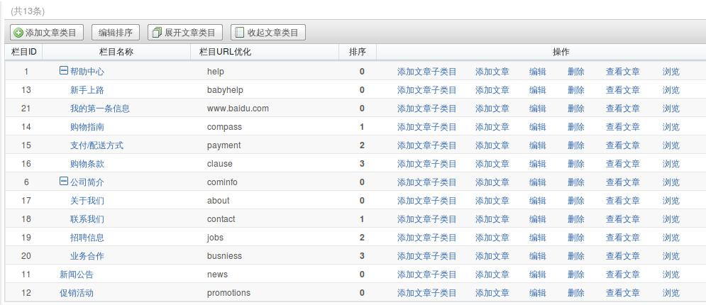

内容管理(CMS) - content
content管理文章的发布，修改，删除等。
content后台控制器调用规则
sh: dot: command not found
前台控制器继承规则
sh: dot: command not found
content后台文章列表的独特之处

这块有添加文章，添加单独页，添加自定义页 点击添加单独页，看超链为：http://localhost/ecstore/index.php/admin/index.php?app=content&ctl=admin_article_detail&act=add&type=1&_finder[finder_id]=662176&finder_id=662176 从超链中看出找到admin_article_detail这个控制器里面的add方法，但是他还会传一个type=1这个值，在add的方法里面接收到type值，根据type值的不同去_editor方法里面寻找不同的模板文件。 注意：type有3个值：1，2，3。1代表添加文章。2代表添加单独也。3代表添加自定义页。
后台文章栏目的独特之处

这块没有调用finder函数，而是在后台控制器node.php里面的index方法里面调用的index.html模板里面定义的。
content的扩展类的介绍
- content_sidepanel_article
sidepanel 的页面模板 后台文章左侧菜单的模板
- content_menu_article_index
文章导航类在后台的操作是： 选择完后按下一步会出现
选择完后按下一步会出现 最后提交。
最后提交。
这个扩展类是为site服务的，扩展类中的方法在site下面的menu.php
控制器里面被调用，择文章页后的生成的HTML表单，并在后台显示。
如：$obj = kernel::service('site_menu.' . sprintf('%s_%s_%s', $args['app'], $args['ctl'], $args['act']));返回注册的service的类名
- content_menu_article_i
节点导航类在后台的操作是： 选择完按下一步会出现
选择完按下一步会出现 最后提交。
最后提交。
这个扩展类是为site服务的，扩展类中的方法在site下面的menu.php
控制器里面被调用，择文章页后的生成的HTML表单，并在后台显示。
如：$obj = kernel::service('site_menu.' . sprintf('%s_%s_%s', $args['app'], $args['ctl'], $args['act']));返回注册的service的类名
节点导航比文章导航多了一个下拉框，下拉框里面的内容为节点的名称。
- content_menu_article_l_
文章列表导航类在后台的操作是： 选择完按下一步会出现最后提交。
选择完按下一步会出现最后提交。
这个扩展类是为site服务的，扩展类中的方法在site下面的menu.php
控制器里面被调用，择文章页后的生成的HTML表单，并在后台显示。
如：$obj = kernel::service('site_menu.' . sprintf('%s_%s_%s', $args['app'], $args['ctl'], $args['act']));返回注册的service的类名
列表导航比文章导航多了一个下拉框，下拉框里面的内容为所有文章的标题的名称。
- content_finder_indexs
indexs的finder区如图中的编辑，预览按钮。
- content_service_router
content的前台路由规则。
实现site_interface_router接口。
方法：enable()
gen_url()
分别是获取use_node_path_url值
获取前台控制器对应的地址
gen_url()参数设置：
1： param array $params 控制器，方法，参数 等
2：return string 返回访问地址
- content_service_tplsource content_service_nodetplsource
自定义模板类
自定义模板文件，如邮件模板，短信模板
一般是我们定义好一个邮件模板文件，先是将规则定义好，根据规则把模板文件存储到数据库
在要使用这个模板文件的时候则到数据库中把模板文件获取到，在根据规则把数据填充到模板文件中
再用base_render中的fetch方法进行编译返回
使用方法
注册service tpl_source.$name
<service id="tpl_source.tplsource">
<class>content_service_tplsource</class>
</service>
service类的写法
last_modified 返回模板文件最后修改的时间
get_file_contents 返回自定义模板文件
以上俩个方法在base_render类中被display方法调用
display 是对html模板文件进行编译后输出
- content_site_view_helper
这个扩展类里面主要实现了2个方法，即头部方法function_header，尾部方法function_footer这个类在 site_view_helper中被调用。使用方法：
function_header($params,&$smarty)
function_footer($params,&$smarty)
@param array 参数
@param object $smarty smarty实例
@return string 返回HTML内容
- content_site_sitemaps
后台地图生成类。在site_sitemaps中被调用